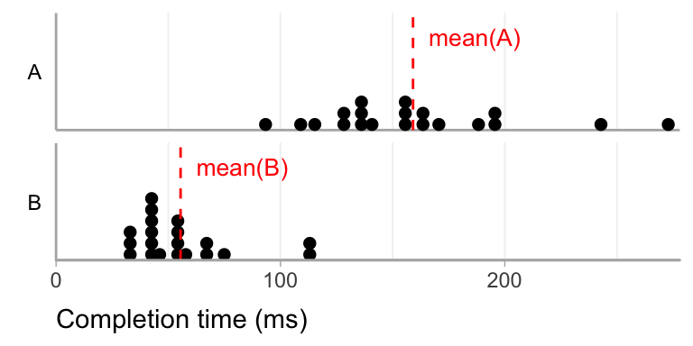
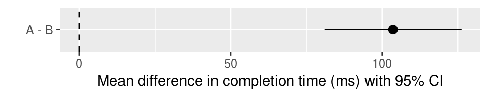

Chapter 2 Effect size
knitr::include_graphics("figures/effectsize/teaser.png")
# TODO: generate the teaser figure in code2.1 What is an effect size?
Broadly speaking, an effect size is “anything that might be of interest” (Cumming 2013); it is some quantity that captures the magnitude of the effect studied.
In HCI, common examples of effect size include the mean difference (e.g., in seconds) in task completion times between two techniques, or the mean difference in error rates (e.g., in percent). These are called simple effect sizes (or unstandardized effect sizes).
More complex measures of effect size exist called standardized effect sizes (see What is a standardized effect size?). Although the term effect size is often used to refer to standardized effect sizes only, using the term in a broader sense can avoid unnecessary confusion (Cumming 2013; Wilkinson 1999). In this document, “effect size” refers to both simple and standardized effect sizes.
2.2 Why and when should effect sizes be reported?
In quantitative experiments, effect sizes are among the most elementary and essential summary statistics that can be reported. Identifying the effect size(s) of interest also allows the researcher to turn a vague research question into a precise, quantitative question (Cumming 2014). For example, if a researcher is interested in showing that their technique is faster than a baseline technique, an appropriate choice of effect size is the mean difference in completion times. The observed effect size will indicate not only the likely direction of the effect (e.g., whether the technique is faster or slower), but also whether the effect is large enough to care about.
For the sake of transparency, effect sizes should always be reported in quantitative research, unless there are good reasons not to do so. According to the American Psychological Association:
For the reader to appreciate the magnitude or importance of a study’s findings, it is almost always necessary to include some measure of effect size in the Results section. (American Psychological Association 2001)
Sometimes, effect sizes can be hard to compute or to interpret. When this is the case, and if the main focus of the study is on the direction (rather than magnitude) of the effect, reporting the results of statistical significance tests without reporting effect sizes (see the inferential statistics FAQ) may be an acceptable option.
2.3 How should effect sizes be reported?
The first choice is on whether to report simple effect sizes or standardized effect sizes. For this question, see Should simple effect sizes or standardized effect sizes be reported?
It is rarely sufficient to report an effect size as a single quantity. This is because a single quantity like a difference in means or a Cohen’s d is typically only a point estimate, i.e., it is merely a best guess of the true effect size. It is crucial to also assess and report the statistical uncertainty about this point estimate.
For more on assessing and reporting statistical uncertainty, see the inferential statistics FAQ.
Ideally, an effect size report should include:
- The direction of the effect if applicable (e.g., given a difference between two treatments
AandB, indicate if the measured effect isA - BorB - A). - The type of point estimate reported (e.g., a sample mean difference)
- The type of uncertainty information reported (e.g., a 95% CI)
- The units of the effect size if applicable, or the type of standardized effect size if it is a unitless effect size.
This information can be reported either numerically or graphically. Both formats are acceptable, although plots tend to be easier to comprehend than numbers when more than one effect size needs to be conveyed (Loftus 1993; Kastellec and Leoni 2007). Unless precise numerical values are important, it is sufficient (and often preferable) to report all effect sizes graphically. Researchers should avoid plotting point estimates without also plotting uncertainty information (using, e.g., error bars).
▸ Exemplar: simple effect size (specifically in the “Reporting simple effect size” sub-section)
2.4 What is a standardized effect size?
A standardized effect size is a unitless measure of effect size. The most common measure of standardized effect size is Cohen’s d, where the mean difference is divided by the standard deviation of the pooled observations (Cohen 1988). Other approaches to standardization exist [prefer citations]. To some extent, standardized effect sizes make it possible to compare different studies in terms of how “impressive” their results are (see How do I know my effect is large enough?); however, this practice is not without criticism (see the section Standardized mean differences let us compare and summarize results when studies use different outcome scales of (Cummings 2011)).
2.5 Should simple or standardized effect sizes be reported?
While the term effect size may conjure up the image of arcane statistical formulas, the most useful effect sizes are often much simpler, and more intuitive, than perhaps should even warrant a specialized term. An effect size is essentially any way to compute the practical size of an effect.
Standardized effect sizes are useful in some situations, for example when effects obtained from different experiments and/or expressed in different units need to be combined or compared (Cumming 2014). However, even this practice is controversial, as it can rely on assumptions about the effects being measured that are difficult to verify (Cummings 2011).
In most cases, simple effect sizes should be preferred over standardized effect sizes:
Only rarely will uncorrected standardized effect size be more useful than simple effect size. It is usually far better to report simple effect size. (Baguley 2009)
Simple effect sizes are often easier to interpret and justify (Cumming 2014; Cummings 2011). When the units of the data are meaningful (e.g., seconds), reporting effect sizes expressed in their original units is more informative and can make it easier to judge whether the effect has a practical significance (Wilkinson 1999; Cummings 2011).
Barring a strong, domain- or problem-specific argument for reporting a standardized effect size instead of a simple one, simple effect sizes should be preferred as being more transparent and easier to interpret.
If a standardized effect size is reported, it should be accompanied by an argument for its applicability to the domain. If there is no inherent reasoning to argue for a particular interpretation of the practical significance of the standardized effect size, it should be accompanied by another assessment of the practical significance of the effect.
▸ Exemplar: simple effect size and standardized effect size
2.6 How do I know my effect is large enough?
Although there exist rules of thumb to help interpret standardized effect sizes, these are not universally accepted. See What about Cohen’s small, medium, and large effect sizes?
It is generally advisable to avoid the use of arbitrary thresholds when deciding on whether an effect is large enough, and instead try to think of whether the effect is of practical importance. This requires domain knowledge, and often a fair degree of subjective judgment. Ideally, a researcher should think in advance what effect size they would consider to be large enough, and plan the experiment, the hypotheses and the analyses accordingly (see the experiment and analysis planning FAQ).
Nevertheless, more often than not in HCI, it is difficult to determine whether a certain effect is of practical importance. For example, a difference in pointing time of 100 ms between two pointing techniques can be large or small depending on the application, how often it is used, its context of use, etc. In such cases, forcing artificial interpretations of practical importance can hurt transparency. In many cases, it is sufficient to present effect sizes in a clear manner and leave the judgment of practical importance to the reader.
Simple effect sizes are often a better choice, because they provide the information necessary for an expert in the area to use their judgment to assess the practical impact of an effect size. For example, a difference in reaction time of 100ms is above the threshold of human perception, and therefore likely of practical impact. A difference of 100ms in receiving a chat message in an asynchronous chat application is likely less impactful, as it is small compared to the amount of time a chat message is generally expected to take. A difference in pointing time of 100ms between two pointing techniques might be large or small depending on the application, how often it is used, the context of use, etc. Presenting simple effect sizes in a clear way—with units—allows the expert author to argue why the effect size may or may not have practical importance and allow the expert reader to make their own judgment.
2.7 What about Cohen’s small, medium, and large effect sizes?
Conventional thresholds are sometimes used for standardized effect sizes like Cohen’s d, labeling them “small”, “medium”, or “large”. These thresholds are however largely arbitrary (Cummings 2011). They were originally proposed by Cohen based on human heights and intelligence quotients (Cohen 1977), but Cohen, in the very text where he first introduced them, noted that these thresholds may not be directly applicable to other domains:
The terms “small”, “medium”, and “large” are relative, not only to each other, but to the area of behavioral science or even more particularly to the specific content and research method being employed in any given investigation… In the face of this relativity, there is a certain risk inherent in offering conventional operational definitions for these terms for use in power analysis in as diverse a field of inquiry as behavioral science. This risk is nevertheless accepted in the belief that more is to be gained than lost by supplying a common conventional frame of reference which is recommended for use only when no better basis for estimating the ES index is available. (Cohen 1977)
Cohen recommended the use of these thresholds only when no better frame of reference for assessing practical importance was available. However, hindsight has demonstrated that if such thresholds are offered, they will be adopted as a convenience, often without much thought to how they apply to the domain at hand (Baguley 2004; Lenth 2001); Lenth has called this usage “canned effect sizes” (Lenth 2001). Once adopted, these thresholds make reports more opaque, by standardizing away units of measurement and categorizing results into arbitrary classes. Like Cummings (2011), we recommend against assessing the importance of effects by labeling them using Cohen’s thresholds.
2.8 Exemplar: Simple effect size
2.8.1 Libraries needed for this analysis
library(tidyverse)
library(forcats) # for fct_...()
library(broom) # for tidy()
library(ggstance) # for geom_pointrangeh(), stat_summaryh()2.8.2 Data
Imagine a between-subjects design, with completion time (in milliseconds) measured in two groups, A and B, with 20 subjects each.
set.seed(12)
n <- 20
data <- tibble(
group = rep(c("A", "B"), each = n),
completion_time_ms = c(
rlnorm(n, meanlog = log(170), sdlog = 0.3),
rlnorm(n, meanlog = log(50), sdlog = 0.4)
)
)We assume a log-normal model of completion times, which is a commonly-used model of completion time (Sauro and Lewis 2010) and ensures completion times are all positive.
A good first step in any analysis is always to visualize the data:
p_data <- # save for the teaser figure
data %>%
ggplot(aes(x = completion_time_ms)) +
geom_dotplot(binwidth=5) +
stat_summaryh(aes(y = 0, xintercept = ..x..), fun.x = mean, geom = "vline", color = "red", linetype = "dashed") +
facet_grid(group ~ ., switch="y") +
scale_y_continuous(breaks = NULL) +
geom_vline(xintercept = 0) +
xlab("Completion time (ms)") +
ylab("Group")
p_data
This plot shows all observed completion times in each group (black dots) along with the mean in each group (dashed red lines).
2.8.3 Calculating simple effect size
Since we have meaningful units (milliseconds), we will use the difference in mean completion time as our effect size. Following our recommendations on how to report effect size, we also need to report the uncertainty around the sample effect size.
There are several possible approaches to estimating the uncertainty in the difference between the two groups. For simplicity, we show one possible approach in this exemplar, but we provide a non-exhaustive comparison of a few other approaches in the effect size guideline appendix.
2.8.4 Difference in means with Student’s t confidence interval
While the response distributions are non-normal, the sampling distribution of the difference in means will still be defined on \((-\infty, +\infty)\) and approximately symmetrical (per the central limit theorem), so we can compute a Student’s t distribution confidence interval for the difference in means.
t_result <-
t.test(completion_time_ms ~ group, data = data) %>%
tidy() # put result in tidy tabular format
t_result| estimate | estimate1 | estimate2 | statistic | p.value | parameter | conf.low | conf.high | method | alternative |
|---|---|---|---|---|---|---|---|---|---|
| 103.6021 | 159.0898 | 55.48774 | 9.388748 | 0 | 28.66574 | 81.02211 | 126.182 | Welch Two Sample t-test | two.sided |
The tidy()ed output of the t.test() function includes an estimate of the mean difference in milliseconds (estimate) as well as the lower (conf.low) and upper (conf.high) bounds of the 95% confidence interval.
2.8.5 Reporting simple effect size
Ideally, we would have space in our paper to report the effect size graphically:
p_simple_effect_size <- # save for the teaser figure
t_result %>%
ggplot(aes(y = "A - B", x = estimate, xmin = conf.low, xmax = conf.high)) +
geom_pointrangeh() +
geom_vline(xintercept = 0, linetype="dashed") +
xlab("Mean difference in completion time (ms) with 95% CI") +
ylab("")
p_simple_effect_size
This graphical report includes all of the elements of an effect size report that we recommend:
- The direction of the difference (indicated by the label
A - B) - The type of estimate reported (mean difference)
- The type of uncertainty indicated (95% CI)
- The units (ms)
Space may not always permit the graphical report. While it can be less easy to interpret, an alternative is a textual report. Such a report should still include all of the four elements listed above. For example:
Group
Ahad a greater mean completion time than groupBby 104 milliseconds (95% CI: [81, 126]).
2.8.6 Interpreting effect size: same result, different domains = different interpretations
Because simple effect sizes include units, we can use our expert judgment to interpret the report. Authors may wish to do so in order to put their result in context. Because the report above includes everything necessary for other experts to come to their own conclusion, providing our own interpretation does not prevent readers from applying their own judgment and coming to different conclusions.
To illustrate the effect of domain on interpreting effect size, we will imagine two different domains that might have led to the same result reported above, and write a different interpretation of the data for each.
2.8.6.1 Domain 1: Physical prototyping
Imagine the above study was from the comparison of a novel physical user interface prototyping system (treatment B) to the previous state of the art (A), and the completion time referred to the time for feedback to be given to the user after they perform an input action. We might report the following interpretation of the results:
Technique
Boffers a large improvement in feedback time (~81 – 126ms mean decrease), resulting in feedback times that tend to be less than the threshold of human perception (less than about 100ms). By contrast, the larger feedback times offered by techniqueAtended to be above that threshold, possibly degrading users’ experience of the prototypes built using that technique.
2.8.6.2 Domain 2: Chatbots
Imagine the same quantitative results, now in the context of a natural language chat bot designed to answer users’ questions. Here, technique A will be the novel system, with improved natural language capabilities compared to the previous state-of-the-art technique, B. We might report the following interpretation of the results:
While technique
Atakes longer to respond to chat messages (~81–126ms increase in mean response time), we believe this difference is acceptable in the context of an asynchronous chat interface in which users do not expect instantaneous responses. When weighed against the improved natural language capabilites of techniqueA, we believe this small increase in response time for messages is worth the improved message content.
The same effect size is plausibly described as large in domain 1 and small in domain 2, illustrating the importance of expert interpretation to reporting and understanding effect size and the difficulty in applying pre-defined thresholds across domains.
2.9 Exemplar: Within-subjects experiment
Large individual differences can be a major source of noise. An effective way of accounting for that noise is for every subject to run in every combination of conditions multiple times.
In this example, we’ll compare two interfaces for visualizing data.
- Independent Variable layout: the two layouts of the interface
- Independent Variable size: the size of the dataset visualized (small, medium, and large)
- Independent Variable color: interface color, where we don’t expect any effect
We run each subject through each combination of these variables 20 times to get (2 interfaces) × (3 sizes) × (4 colors) × (20 repetitions) = 480 trials per subject. We measure some reponse (e.g., reponse time) in each trial.
2.9.1 Libraries needed for this analysis
library(tidyverse)
library(broom) # for tidy()
library(afex) # for aov_ez()2.9.2 Subjects, conditions, and repetitions
In this example, there are 10 subjects (id column). Because this is simulated data, we’re using subject id to represent individual performance differences. Because within-subjects experiments partly account for individual differences, they often need far fewer subjects than between-subject designs. Repetitions also help reduce noise.
set.seed(456) # make the output consistent
data <- expand.grid(
id = rnorm(6, 5, 0.5), # individual differences
layout = 0:1, # independent variable
size = 0:2, # independent variable
color = 0:3, # independent variable
repetition = 1:20 # each subject runs in each condition multiple times
)2.9.3 Simulate some noisy effects
We’ll simulate an experiment with a main effect of layout and size and an interaction between them. However, color and its interactions will not have an impact.
data <-
data %>%
mutate(
response_time =
id + # additive individual differences
layout * .4 + # main effect of layout
size * .2 + # main effect of size
color * 0 +
layout * size * .5 + # 2-way interaction
size * color * 0 +
layout * color * 0 +
layout * size * color * 0 +
rnorm(n()) # noise
)Even though we used numbers to simulate the model, the independent variables and subject ID are all factors.
data <-
data %>%
mutate(
id = factor(id),
layout = factor(layout),
size = factor(size),
color = factor(color)
)2.9.4 Compute effect sizes
While Cohen’s d is often used for simple 2-factor, single-trial, between-subject designs, more complex designs can be more consistently interpretted with the eta squared (\(\eta^{2}\)) family of effect sizes, which represent the proportion of variance accounted for by a particular variable. A variant, generalized eta squared (\(\eta_{G}^{2}\)), is particularly suited for providing comparable effect sizes in both between and within-subject designs (Olejnik and Algina 2003; Bakeman 2005). This property makes it more easily applicable to meta-analyses.
For those accustomed to Cohen’s d, it’s important to be aware that \(\eta_{G}^{2}\) is typically smaller, with a Cohen’s d of 0.2 being equivalent to a \(\eta_{G}^{2}\) of around 0.02. Also, the actual number has little meaning beyond its scale relative to other effects.
results = afex::aov_ez(
data = data,
id = 'id', # subject id column
dv = 'response_time', # dependent variable
within = c('layout', 'size', 'color'), # within-subject independent variables
between = NULL ,# between-subject independent variables
anova_table = list(es = 'ges') # effect size = generalized eta squared
)## Warning: More than one observation per cell, aggregating the data using
## mean (i.e, fun_aggregate = mean)!Note: the warning indicates that the aov_ez function automatically collapses repetitions into a mean, which may be a problem if an experiment is not fully counterbalanced. This example, however, has every subject running in every combination of conditions, so simple collapsing is the correct procedure.
anovaResults <-
results$anova_table %>%
rownames_to_column('effect') %>% # put effect names in a column
select(-`Pr(>F)`) # no need to show p-values
anovaResults %>%
tidy() %>%
rename(F = statistic)## Warning in tidy.anova(.): The following column names in ANOVA output were
## not recognized or transformed: effect, num.Df, den.Df, MSE, ges| effect | num.Df | den.Df | MSE | F | ges |
|---|---|---|---|---|---|
| layout | 1 | 5 | 0.0628181 | 415.8246232 | 0.4579266 |
| size | 2 | 10 | 0.0817993 | 104.8159409 | 0.3567318 |
| color | 3 | 15 | 0.0287555 | 1.2685908 | 0.0035267 |
| layout:size | 2 | 10 | 0.0311379 | 101.2790368 | 0.1694197 |
| layout:color | 3 | 15 | 0.0312760 | 1.0331263 | 0.0031251 |
| size:color | 6 | 30 | 0.0366975 | 3.2407090 | 0.0225560 |
| layout:size:color | 6 | 30 | 0.0480365 | 0.9095516 | 0.0084067 |
Note that the fractional degrees of freedom result from a Greenhousse-Geisser sphericity correction.
TODO: Boostrapped 95%CIs for effect sizes
Pro: people should
Con: would make the guide even longer
Maybe push into another guideline?2.9.5 Reporting the results
Looking at the F and ges (generalized eta squared) columns, there are clear main effects for layout and size and an interaction between layout and size. However color and the other 2-way and 3-way interactions show only negligeable effects.
- layout: F1,5 = 416, \(\eta_{G}^{2}\) = 0.458
- size: F2,10 = 105, \(\eta_{G}^{2}\) = 0.357
- layout × size: F2,10 = 101, \(\eta_{G}^{2}\) = 0.169
- color did not have a substantive effect (F3,15 = 1.27, \(\eta_{G}^{2}\) = 0.00353)
Report any interaction for which there is reason to believe an effect could occur. Otherwise, you can simply state that other 2-way and 3-way interactions did not have substantive effect sizes. However, when in doubt, report everything!
2.10 Exemplar: Standardized effect size
TODO: This needs a domain where we can argue that Cohen's d is an exemplar analysis, then repeat structure of exemplar 1 with it
May be an example of existing meta-analysis in HCI.2.10.1 Libraries needed for this analysis
library(tidyverse)
library(effsize) # for cohen.d()2.10.2 Standardized effect size
set.seed(12)
n <- 20
data <- tibble(
group = rep(c("A", "B"), each = n),
completion_time_ms = c(
rlnorm(n, meanlog = log(170), sdlog = 0.3),
rlnorm(n, meanlog = log(50), sdlog = 0.4)
)
)cohen_d <- cohen.d(completion_time_ms ~ group, data = data)
# manual calculation
data_A <- (data %>% filter(group == "A"))[["completion_time_ms"]]
data_B <- (data %>% filter(group == "B"))[["completion_time_ms"]]
sd_A <- sd(data_A)
sd_B <- sd(data_B)
sd_pool <- sqrt( (sd_A^2 + sd_B^2) / 2 )
cohen_d_manual <- abs(mean(data_A) - mean(data_B))/sd_poolStandardized effect size: Cohen’s d = 2.97 SDs with 95% confidence interval [2.04 , 3.90]
2.11 Exemplar: Nonparametric effect size
For a nonparametric test that produces a Z-score, like the Mann-Whitney U test or the Wilcoxon Signed-Rank test, an effect size can be computed as:
Above, Z is the Z-score and N is the number of observations in all groups [Rosenthal (1991), p. 19). The result, r, is a variance-based effect size, like Pearson r, not a Cohen d-family effect size. The r can be squared to estimate the percentage of variance explained, however it will not be exactly equivalent to the Pearson r.
TODO: This needs a domain where we can argue that the nonparametric approach is an exemplar analysis, then repeat structure of exemplar 1 with it2.11.1 Libraries needed for this analysis
library(tidyverse)
library(coin) # for wilcox_test2.11.2 Nonparametric effect size
set.seed(12)
n <- 20
data <- tibble(
group = rep(c("A", "B"), each = n),
completion_time_ms = c(
rlnorm(n, meanlog = log(170), sdlog = 0.3),
rlnorm(n, meanlog = log(50), sdlog = 0.4)
)
)data_A <- (data %>% filter(group == "A"))[["completion_time_ms"]]
data_B <- (data %>% filter(group == "B"))[["completion_time_ms"]]
wilcox_result <- wilcox_test(completion_time_ms ~ factor(group), data = data)
effect_r <- abs(wilcox_result@statistic@teststatistic / sqrt(nrow(data)))Non-parametric effect size: Variance-based effect size r = 0.84.
References
Cumming, Geoff. 2013. Understanding the New Statistics: Effect Sizes, Confidence Intervals, and Meta-Analysis. Routledge.
Wilkinson, Leland. 1999. “Statistical Methods in Psychology Journals: Guidelines and Explanations.” American Psychologist 54 (8). American Psychological Association: 594.
Cumming, Geoff. 2014. “The New Statistics: Why and How.” Psychological Science 25 (1): 7–29. doi:10.1177/0956797613504966.
American Psychological Association. 2001. Publication Manual of the American Psychological Association. 5th Editio.
Loftus, Geoffrey R. 1993. “A Picture Is Worth a Thousandp Values: On the Irrelevance of Hypothesis Testing in the Microcomputer Age.” Behavior Research Methods, Instruments, & Computers 25 (2). Springer: 250–56. https://faculty.washington.edu/gloftus/Research/Publications/Manuscript.pdf/Loftus%20p-values%201993.pdf.
Kastellec, Jonathan P, and Eduardo L Leoni. 2007. “Using Graphs Instead of Tables in Political Science.” Perspectives on Politics 5 (04). Cambridge Univ Press: 755–71.
Cohen, Jacob. 1988. Statistical Power Analysis for the Behavioral Sciences. Lawrence Earlbaum Associates.
Cummings, Peter. 2011. “Arguments for and Against Standardized Mean Differences (Effect Sizes).” Archives of Pediatrics & Adolescent Medicine 165 (7): 592. doi:10.1001/archpediatrics.2011.97.
Baguley, Thom. 2009. “Standardized or simple effect size: what should be reported?” British Journal of Psychology 100 (3): 603–17. doi:10.1348/000712608X377117.
Cohen, Jacob. 1977. “The t Test for Means.” In Statistical Power Analysis for the Behavioral Sciences, Revised Ed, 19–74. Academic Press. doi:10.1016/B978-0-12-179060-8.50007-4.
Baguley, Thom. 2004. “Understanding statistical power in the context of applied research.” Applied Ergonomics 35 (2): 73–80. doi:10.1016/j.apergo.2004.01.002.
Lenth, Russel V. 2001. “Some practical guidelines for effective sample size determination.” The American Statistician 55 (3): 187–93. doi:10.1198/000313001317098149.
Sauro, Jeff, and James R. Lewis. 2010. “Average task times in usability tests.” Proceedings of the 28th International Conference on Human Factors in Computing Systems - CHI ’10. doi:10.1145/1753326.1753679.
Olejnik, Stephen, and James Algina. 2003. “Generalized Eta and Omega Squared Statistics: Measures of Effect Size for Some Common Research Designs.” Psychological Methods.
Bakeman, Roger. 2005. “Recommended Effect Size Statistics for Repeated Measures Designs.” Behavior Research Methods.
Rosenthal, Robert. 1991. Meta-Analytic Procedures for Social Research. Vol. 6. Sage.